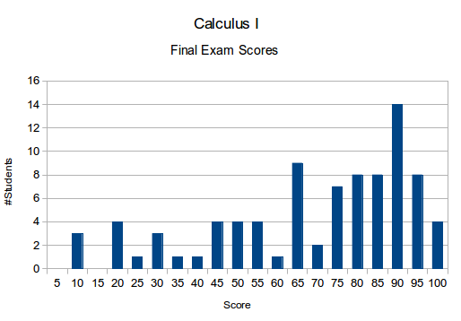
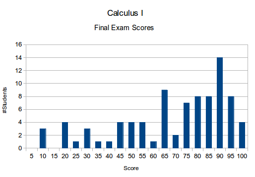

The distribution of the cumulative scores was as follows:

| Time | Tue, Thu 2:40pm–3:55pm |
| Place | Room 312, Math building |
| Instructor | Anand Deopurkar (anandrd at math) |
| TAs | Mihir Bhaskar (mkb2153), Tanvi Gupta (tg2362), Pak Hin Lee (phlee at math) |
| Office hours | Tue 5:15–6:15 and Wed 4:30pm–5:30pm in Math 413 + MWF 4:30–5:30 in Math 413 during reading and exam week. |
| Textbook | Calculus: Early Transcendentals (7th ed.) by James Stewart WebAssign is not required. |
The final exams have been graded. The mean was 67 and the median was 73. The score distribution was as follows:

The distribution of the cumulative scores was as follows:
Congratulations for (almost) finishing Calculus I! The only remaining component is the final exam, which will be held on Thursday, May 15, 2014 from 1:10pm to 4:00pm in Math 312. The final will be cumulative with a slight bias towards the last third of the course on integration. To help you prepare, here are some resources. I will have additional office hours during the reading week and exam week: Monday, Wednesday, Friday from 4:30 to 5:30 in Math 413.
I have made a list of formulas that you must know.
Professor Paul Dawkins has created an extensive list of practice problems with solutions. Here is the page for Calculus I. This page has links to individual topic pages, which contain several problems with solutions. In particular, you can check out:
I urge you to try the problems without looking at the solutions, read the corresponding section of the text if you are unable to do the problems, and then look at the solution to see what you missed.
The mean for Midterm 2 was 25/50. The score distribution is here.
The second midterm will be on Thursday, April 3. It will cover everything that was covered up to Thursday, March 27. More specifically, you are responsible for the following topics:
These topics correspond to the following sections from the book: §3.1, 3.2 3.3, 3.4, 3.5, 3.6, 3.9, 3.10, 4.1, 4.3, 4.4, 4.7. Exponential growth/decay will not be on the exam.
We have finished grading the first midterm. You can view your score on CourseWorks. The mean and the median were around 36 (out of 50) and the standard deviation was about 10. The scores will not be curved. Your final letter grade will be based on a weighted average of the scores from the midterms, the final, and the homework. Typically, the top 1/3 of the class will receive an A (with appropriate modifiers), the next 1/2 a B (with appropriate modifiers), and so on. This graph shows the class performance from which you can guage roughly where you stand.
Here are solutions to the practice midterm.
Here are some past midterms: one, two.
Your past graded homeworks are available in North corridor of the fifth floor of the math building. You can pick them up at any time. Your homework grades are available on CourseWorks.
The first midterm is on Thursday, February 20. You are responsible for everything covered up to Tuesday, February 11 (derivatives of polynomials). The class on Tuesday, February 18 will be a review of the material.
To prepare, make sure you can do all the homework problems, and attempt similar problems from the textbook without looking at the book or your notes. Here is a practice exam.
Today's class (February 13) is cancelled due to the winter storm.
The solutions to Homework 1 and Homework 2 are up.
If you want to use WebAssign, use the class key columbia 8529 7221.
We will study differential and a bit of integral calculus with applications. This is a tentative plan of the course
| Week | Topic | Reading | Homework |
| Jan 21, 23 |
Introduction Functions and ways to represent them A catalog of essential functions New functions from old functions Expenential functions |
1.1, 1.2, 1.3, 1.5 |
Solutions 1 § 1.1: 3, 7, 8, 9, 10, 44, 50 § 1.2: 4, 13, 18 § 1.3: 3, 51, 54, 56 § 1.5: 4, 5, 21, 29 (a,b,c). |
| Jan 28, 30 |
Inverse functions, logarithms Tangents and velocity The limit of a function Limit laws |
1.6, 2.1, 2.2, 2.3 |
Solutions 2 § 1.6: 21, 22, 23, 40, 61 § 2.1: 2, 5, 8 § 2.2: 2, 7, 9, 11 § 2.3: 1, 26, 38, 41 |
| Feb 4, 6 |
Continuity Limits at infinity, horizontal asymptotes Derivatives and rates of change The derivative as a function |
2.5, 2.6, 2.7, 2.8 |
Solutions 3 § 2.5: 9, 11, 14, 16, 41, 44, 65 § 2.6: 3, 14, 37, 57(a), 62 § 2.7: 8, 11, 39, 42, 51 § 2.8: 3, 15, 25, 40 |
| Feb 11, 13 |
Derivatives of polynomials and exponentials Product and quotient rules Derivatives of trigonometric functions |
3.1, 3.2, 3.3 | Solutions 4 § 3.1: 3, 6, 13, 16, 26 § 3.1: 34, 43, 47, 62, 77 |
| Feb 18, 20 |
Review Midterm 1 |
||
| Feb 25 | Last day to drop for most schools | ||
| Feb 25, 27 |
Derivatives of trigonometric functions Product rule, quotient rule Chain rule |
3.2, 3.3, 3.4 | Solutions 5 § 3.2: 24, 28, 44 § 3.3: 5, 14, 21, 30, 39, 44 § 3.4: 2, 3, 33, 47, 62, 66 |
| Mar 4, 6 |
Derivatives of logarithm Implicit differentiation Related rates |
3.5, 3.6, 3.8, 3.9 |
Solutions 6 § 3.5: 1, 25, 28, 32, 45, 75 § 3.6: 4, 15, 29, 42, 48 § 3.9: 5, 6, 11, 14, 20, 33, 35 |
| Mar 11, 13 |
Maximum and minimum values Derivatives and shape of a curve Linear approximation |
3.10, 4.1, 4.3 |
Solutions 7 § 3.10: 2, 6 (skip the graph), 24, 27, 44 § 4.1: 5, 6, 8, 36, 40, 60 § 4.3: 1, 8, 10, 13, 30, 32, 44 |
| March 17 – 21 | Spring break | ||
| Mar 25, 27 |
L'Hospital's rule Optimization Exponential growth/decay |
4.4, 4.7, 3.8 | |
| April 1, 3 |
Review Midterm 2 |
No homework | |
| April 8, 10 |
Antiderivatives Areas and distances The definite integral |
4.9, 5.1, 5.2 | Solutions 8 § 5.1: 3, 18, 22 § 5.2: 17, 18, 34, 48, 50 § 5.3: 2, 4, 7, 10, 26, 37, 41, 61, 78 |
| April 15, 17 |
Indefinite integrals Substitution rule |
5.4, 5.5 |
Solutions 9 § 5.4: 5, 6, 12, 17, 18, 42, 49 § 5.5: 2, 4, 5, 6, 8, 10, 18 § 5.5: 28, 32, 44, 86. |
| April 22, 24 |
Areas between curves Volumes |
6.1, 6.2 |
Solutions 10 § 5 Review: 10, 12, 43, 46, 70 § 6.1: 1, 2, 4, 32, 43, 44 § 6.2: 2, 6, 19, 21, 40, 48 |
| April 29, May 1 |
Special topics Review |
Homework will be an essential component of the course. It will be assigned on Thursday and will be due on the next Thursday in the drop box on the 4th floor of the Math builting. No late homework will be accepted. To compensate, I will drop the two lowest homework scores.
You may work on the homework in groups, but you must write up the solutions on your own. As a matter of academic honesty, write the names of your collaborators on top of your submitted work. This will not affect your grade.
The final grade will be based on homework (20%), two in-class midterms (20% each), and a final (40%). The exams are scheduled as follows:
The math help room, located at Milbank 333 on the Barnard campus, is an excellent resource to get help and foster collaboration. It will be staffed by TAs in the math department, all eager to help you learn. The staffing schedule is available here.
Although WebAssign is not a required part of the course, you may use it for practice problems. If you have WebAssign access, use the class key columbia 8529 7221.
{kind=link}
{kind=link}